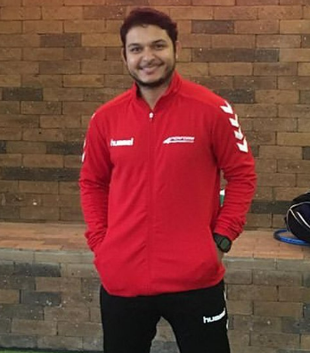

Meu Currículo
Rahí Rodrigues Nobre de Aquino
Rua Rodrigo Codes Sandoval, 250, Maraponga
Fortaleza, Ceará
BR
Objetivo: Desenvolvimento WEB

Síntese de qualificações
Formação Acadêmica
Experiências
Fale Conosco